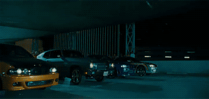

Race 3¶
Track: Choose a new track that is different from Race 1 and Race 2. This track should also be large and wide enough to accomodate two vehicles racing head to head. We use these tubes to set up our track. It is soft enough that crashes will not damange the vehicle. Laser cut these holders so the track will stay in place. Students will be mapping this track so you do not want it to change.
Race Prep: Teams should be given the track beforehand so they can map it on their own time.
Race Day: View the Race3 Rubric and Grading to see how teams are evaluated. Depending on how much time is allocated, there can be a practice sesion beforehand and then have teams do one or two heats of timed trials similar to Race 1 and Race 2 in order for the final race to be seeded. Alternatively, the timed trials for seeding can be done the day before.

